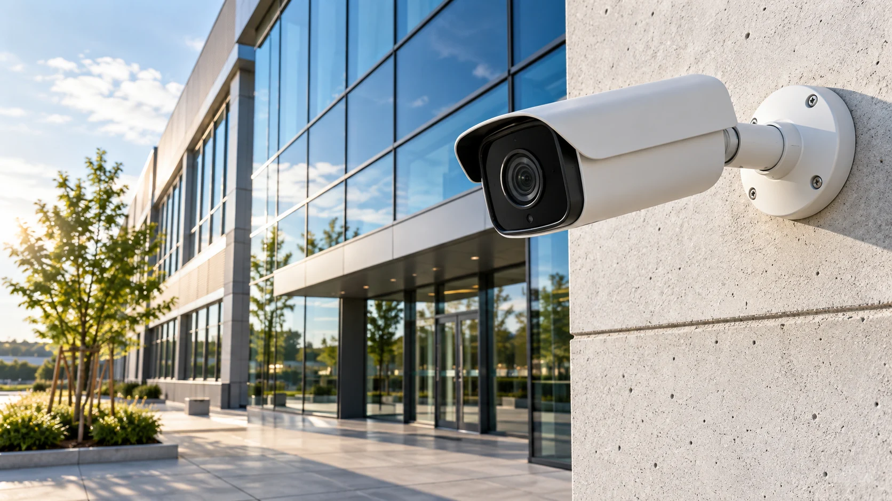

IT & Sicherheitstechnik · Dinkelsbühl
Ihre IT läuft.
Ihre Sicherheit steht.
Technik, die Ihr Unternehmen weiterbringt.
IT-INFRASTRUKTURDATENSCHUTZBETREUUNGSICHERHEITSTECHNIK
Unsere Leistungen
Zwei Kompetenzen.
Ein verlässlicher Partner.
Wir verbinden moderne IT mit professioneller Sicherheitstechnik – für Unternehmen in Dinkelsbühl und der Region.
IT-Dienstleistungen
NetzwerkePlanung und UmsetzungTelekommunikationVerbunden arbeitenIT-ServicePersönlich betreut

Sicherheitstechnik
VideoüberwachungÜberblick behaltenZutrittskontrolleZugänge gezielt steuernGefahrenmeldetechnikSchutz sinnvoll planen
Klarheit für den Umgang mit Daten.
Von der Frage zur Lösung
Verstehen. Umsetzen.
Weiter begleiten.
01 / BERATUNG
Ihr Unternehmen verstehen.
Was benötigen Ihre Menschen und Ihre Abläufe? Gemeinsam klären wir die Anforderungen.
02 / REALISIERUNG
Technik sinnvoll verbinden.
Aus den Anforderungen wird eine passende Lösung für IT, Kommunikation oder Gebäudesicherheit.
03 / BETREUUNG
Auch danach an Ihrer Seite.
Mit persönlichen Ansprechpartnern und Unterstützung bei Ihren technischen Fragen.
SL Service kennenlernen
Regional verbunden.
Technisch vielseitig.
Seit 2003 unterstützt SL Service Unternehmen in der Region. Von Netzwerk und Arbeitsplatz bis zur Gebäudesicherheit: Wir denken Ihre Technik im Zusammenhang.
Handwerk & IndustrieHandel & HotellerieVerwaltung & Institutionen
Mehr über SL Service ↗